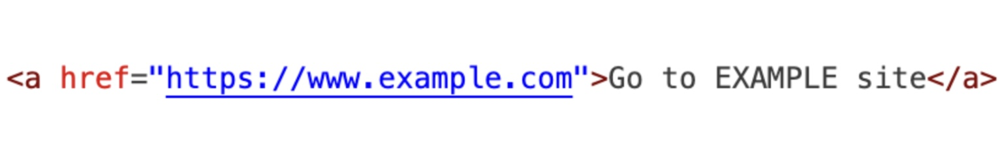

HTML provides structure, and the CSS handles all presentaion and style.
Attributes are special words used **inside the opening tag** of an element to **provide extra information** about the element. They always follow a name=value structure.
This tag is used to create hyperlinks. The most common attribute is href, which indicates the link's destination URL.
